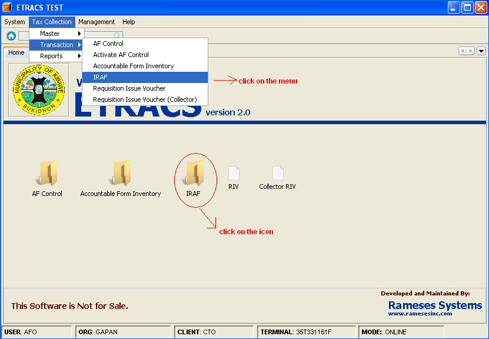
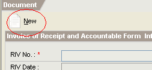
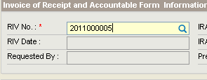
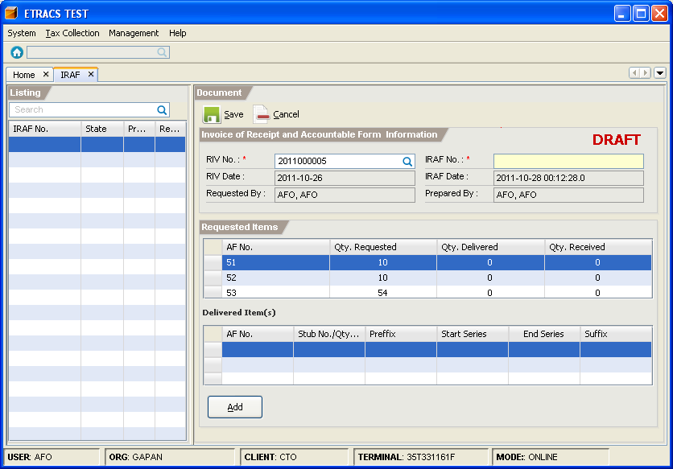
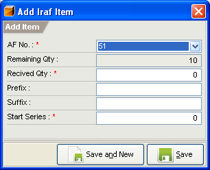
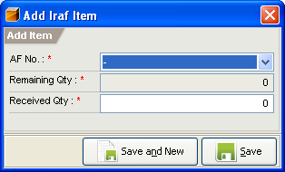

This facility enables you to issue a requested accountable form.
How to issue an accountable form?
1. On the menu toolbar, go to "Tax Collection -> Transaction -> IRAF" item.
You can also click on the "IRAF" icon from the home page

2. Click on the “New” button.

3. Type the RIV number, and press [Enter] to search the request.

4. Select the request from the list, and click on the "OK" button or press [Enter].
5. For the issuance of AFO's request, IRAF number must be specified. (You can use the current date as an IRAF number)

6. Click on the "Add" button.
7. Specify the item information, and click on the “Save and New” or “Save” button to add the item on list.


For the issuance of AFO's request
For the issuance of collector's request
8. Click on the “Save” button to save the document.
9. Click on the “Approve” button to post the IRAF.